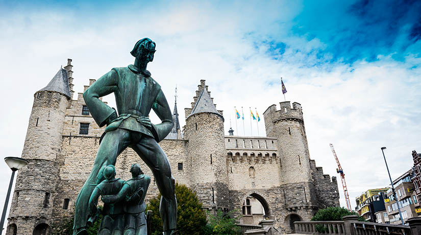
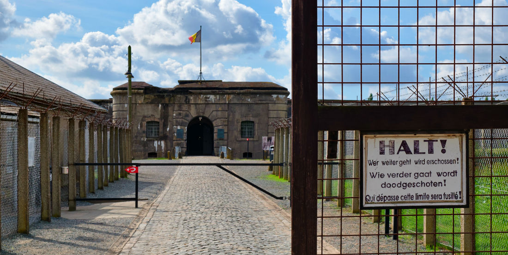

MINSK

Dominique: Estos son los lugares imprescindibles de Amberes, clasificados según nuestros gustos y criterio. La guía más completa de Amberes para no perderte nada.
Hay una parte de Amberes absolutamente vinculada a la magnificencia y a la actividad del río Escalda. Hay otra parte de la ciudad de Amberes, inseparable del brillo, la tradición y el lujo de sus diamantes. Una Amberes comercial, dinámica y exclusiva se abre paso entre sus calles atrayendo poderosamente a sus visitantes. Y hay otra Amberes que se mantiene afincada en su historia, una historia ya larga, fuerte y permanente, pues pese a venir desde lejanos asentamientos de los siglos II y III aún retumba clara en la ciudad. En esa historia encontramos normandos, momentos de floreciente comercio, de disputas entre protestantes y católicos. En esta historia hay casi finales y milagrosos resurgires, hay personajes y países, reyes y comerciantes, siempre presente el Escalda y siempre la belleza de una ciudad que se negó a no seguir adelante.
Amberes no tiene mar y tiene uno de los puertos más importantes de Europa. Esto que a priori pudiera parecer más el estribillo de una cancioncilla infantil, es una de las realidades más importantes del país y uno de los elementos más destacados de la ciudad. Por ello, su visita se convierte en un recorrido por la Amberes más genuina, la Amberes bañada por el eterno e inmenso río escalda, río que no solo viste a la ciudad si no que también es motor y tráfico fluido de transporte y comercio. Ambos, tanto el transporte como el comercio, además de los beneficios que dejan en la ciudad de Amberes, y por ende en toda Europa, mantienen a ésta en constante viaje por el mundo. Visitar el puerto de Amberes es por lo tanto, poner los pies en una de las primeras líneas del país.
La visita de hoy, las letras de hoy, son de esas visitas y de esas letras que en Buendía> ni queremos hacer, ni queremos plasmar. Pero las realidades se imponen, y hay realidades que aunque pasadas, se imponen igualmente y por si no lo hicieran, hay que hacerlo por ellas. Los campos de concentración, el movimiento nacionalsocialista alemán, la II Guerra Mundial, la ocupación nazi y el horror que lo amalgama todo, son de esas cosas a no olvidar. Aunque no las queramos, aunque no nos gusten.

INICIO
ACERCA DE
DESTINOS
BLOG
CONTACTO